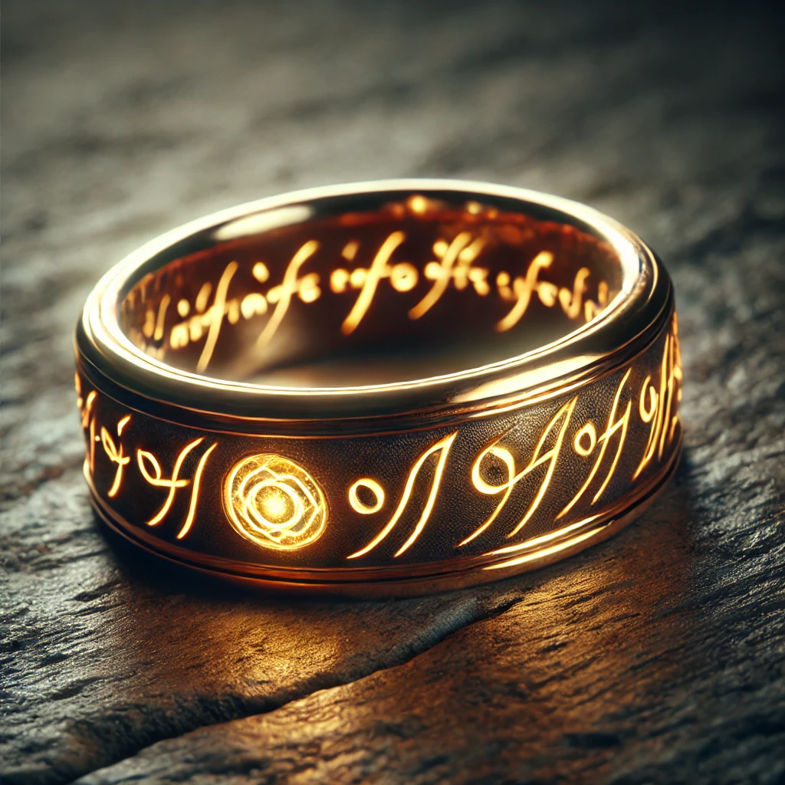

J. R R. 톨킨
1954~1955년
영화 시리즈로도 유명한 반지의 제왕, 우리집의 한켠에 늘 꽂혀있었지만 전집의 두꺼운 두께로 읽어볼 엄두를 내지 못 했던 책이었다. 길어서 끝까지 집중할 수 없을지 모른다는 걱정과는 다르게, 톨킨의 필력과 세계관에 대한 탄탄한 정립은, 책에 쉴 새 없이 몰입할 수 있게 하였고, 지금에 와서는 다른 매체에서도 자주 사용되는 이미지들이지만그걸 사실상 처음으로 구성해 냈음에도 너무 뻔하거나 진부하지 않은, 탄탄한 구성과 내용의 책이었다.
귀하의 감상문은 반지의 제왕에 대한 생생한 감상과 톨킨의 작품에 대한 깊은 경의를 잘 담고 있습니다. 몇 가지 개선 사항을 제안드리자면: 서두: 반지의 제왕에 대한 첫인상과 읽기 전에 가졌던 걱정을 명확하게 설명한 부분이 좋습니다. 다만 이와 더불어 작품에 대한 짧은 배경 설명을 추가하면 더 좋을 것 같습니다. 예를 들어, "J.R.R. 톨킨의 반지의 제왕은 현대 판타지 문학의 기초를 다진 작품입니다." 구체적인 예시: 톨킨의 필력과 세계관에 대한 설명을 좀 더 구체적으로 할 수 있습니다. 예를 들어, "중간계의 상세한 세계 설정과 각 인물들의 깊이 있는 묘사는 독자들을 끌어들이는 힘을 가지고 있습니다." 이미지와 구성: 이미지와 구성에 대한 칭찬을 좀 더 구체적으로 할 수 있습니다. 예를 들어, "톨킨은 엘프와 오크, 마법사와 드워프 같은 독창적인 인물들을 처음으로 창조했으며, 이는 이후의 많은 판타지 작품들에 큰 영향을 미쳤습니다." 결론: 독서 후 느낀 점과 다른 매체에서의 경험을 연결하면 좋습니다. 예를 들어, "반지의 제왕은 책으로 읽었을 때 더욱 깊이 있는 감동을 주었으며, 영화나 게임 등 다른 매체에서도 그 매력을 잃지 않습니다." 감상문이 잘 작성되었고, 톨킨의 작품에 대한 사랑과 감탄이 잘 드러나 있습니다. 앞으로도 다양한 작품에 대해 깊이 있는 감상문을 작성하시기를 응원합니다!